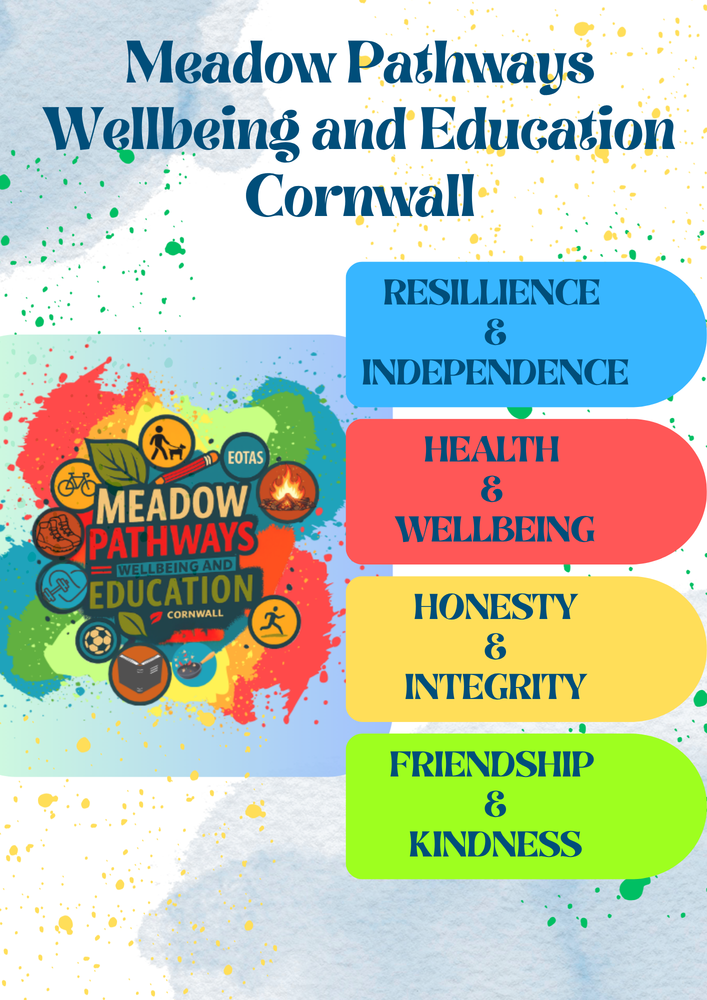

Meet the Team – About Us

Zoe Waitz
Zoe is a qualified teacher with extensive experience in inclusive education, pastoral leadership, and supporting children with diverse needs. She brings warmth, creativity, and clear structure to every learning journey, ensuring each child feels seen and supported.

Michelle Pascoe
Michelle is a qualified counsellor and play therapist with over 20 years’ experience. She leads with a trauma‑informed, person‑centred ethos, building trusting relationships and safe environments where children can reconnect with learning and life.
Our Values
We prioritise emotional safety, connection, and authenticity. Our work is guided by SPACE: Safety, Presence, Attunement, Connection, and Empowerment.
